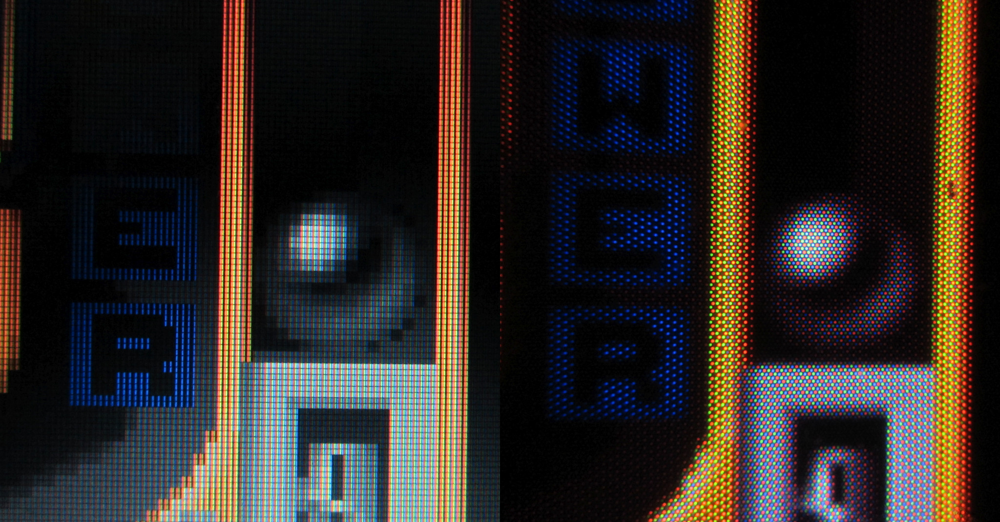

20150719 - CRT Shadow Masks vs LCD
Found these two images below on
this thread
when looking for source photographs for CRT shadow masks.
Great visual description of why CRT shadow masks were so good for image quality in comparison to modern LCDs.
Sure LCD image is double scanned (2 scanlines per pixel), but the comparison would still hold even if it was not.
